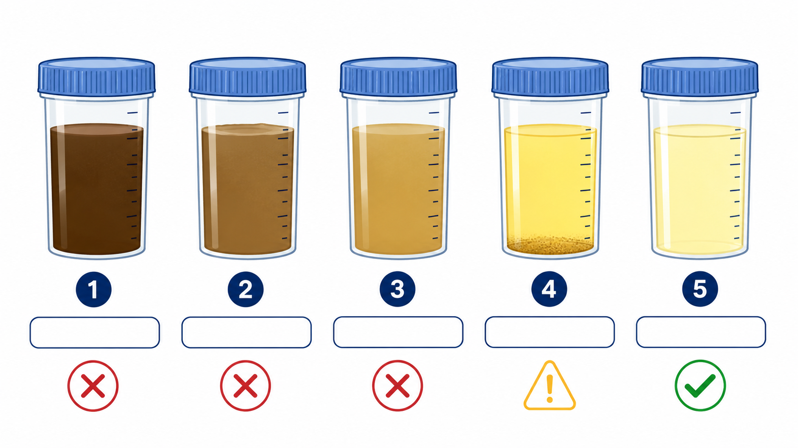
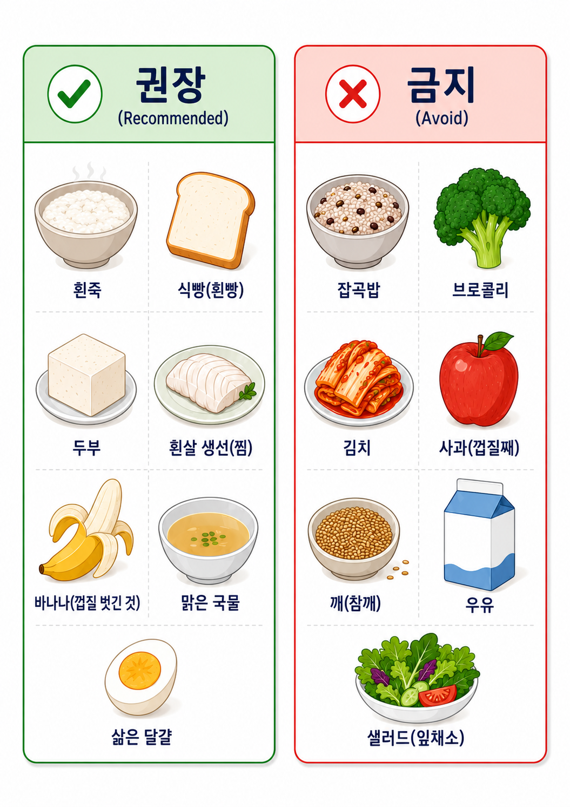
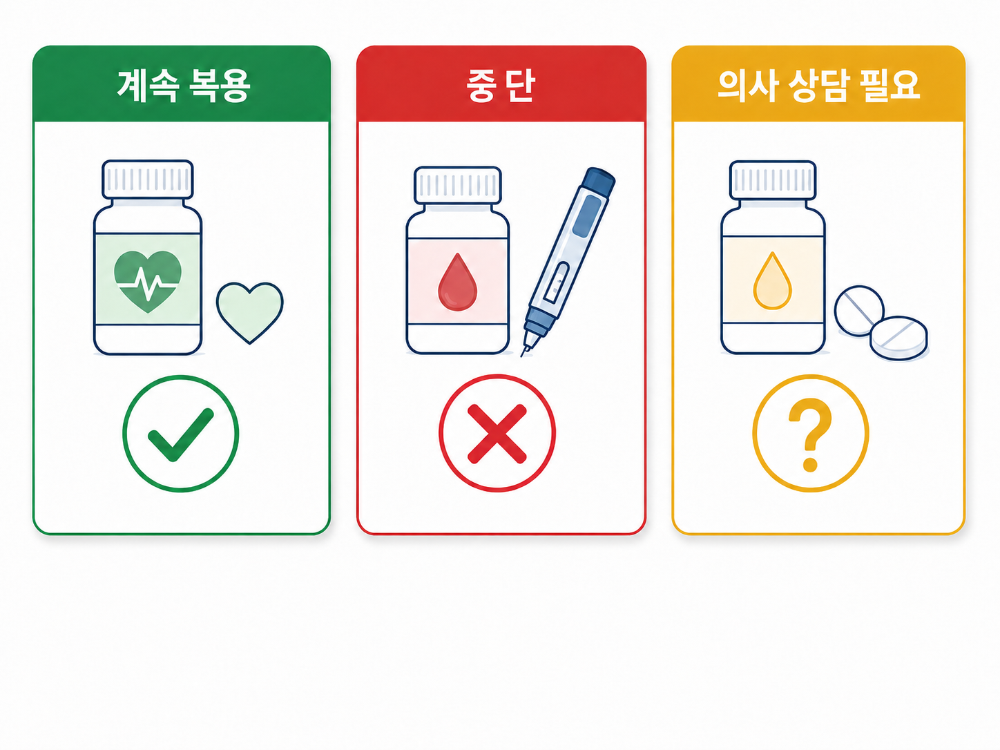

3일 타임라인 — 검사 전 준비 일정
3
3일 전 (D−3)부터 저잔사식 시작 — 잡곡밥·현미·김치·해조류·견과류·씨 있는 과일 (포도·수박·참외·키위·딸기) 모두 중단. 흰밥, 흰빵, 두부, 계란, 닭가슴살, 흰살생선은 가능합니다. 변비가 있는 분은 이 단계가 더 중요합니다.
1
1일 전 (D−1) — 식사 단계적 축소 — 아침·점심은 흰죽·미음·두부 등 부드러운 음식. 저녁부터 금식이며 맑은 물·이온음료 (투명색)만 가능. 우유·주스·커피·붉은색 음료 금지. 오후 검사 split-dose는 보통 전날 저녁 6시 1차 복용을 시작합니다.
D
당일 (D−Day) — 2차 분할 복용 + 내원 — 새벽 4–5시경 2차 장정결제 복용 (검사 4–5시간 전 완료 목표). 변이 맑은 물 같은 변 또는 맑은 노란 물처럼 나오면 준비 완료. 검사 30분 전 도착 · 수면내시경 시 보호자 동반 필수 · 운전 금지.
저잔사식 가이드 (Low-Residue Diet) — 3일 전부터 · 변 색깔 자가 체크 (장정결제 복용법은 별도 안내문)
변 색깔 자가 체크 — ⑤ 맑은 노란 액체에 도달하면 검사 가능


복약·내원 가이드 · 약물 3분류 (계속 / 중단 / 의사 상담)
복약·항혈전제 · IMPORTANT
- · 혈압약 당일 아침 소량의 물과 복용 OK
- · 당뇨약·인슐린 당일 중단 (저혈당 위험)
- · 항혈전제 주치의 상의 필수 (자가 중단 금지)
- · 즉시 ☏ 031-893-4560
심한 구토·복통·혈변

혈압약
심장·갑상선약
심장·갑상선약
당뇨약·인슐린
경구 혈당강하제
경구 혈당강하제
항혈전제
아스피린·와파린
아스피린·와파린
내원 시 준비물 & 도착
- · 30분 전 도착 · 정맥로 확보 시간
- · 보호자 동반 · 당일 운전 금지 (24시간)
- · 편한 옷차림 · 귀중품 최소화
- · 지참물 신분증, 처방전, 약 목록